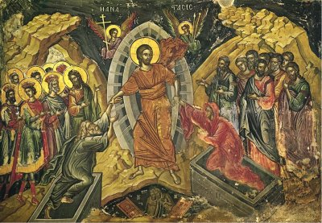

HODIE / Domenica di Pasqua, Risurrezione del Signore
ANTIFONA / Sono risorto, o Padre, e sono sempre con te. Alleluia. Hai posto su di me la tua mano. Alleluia. È stupenda per me la tua saggezza. Alleluia, alleluia. (Sal 138,18.5-6) ♦ Il Signore è veramente risorto. Alleluia. A lui gloria e potenza nei secoli eterni. Alleluia, alleluia. (Lc 24,34; Ap 1,6)
CONFITEOR / Confesso a Dio onnipotente e a voi, fratelli e sorelle, che ho molto peccato in pensieri, parole, opere e omissioni, per mia colpa, mia colpa, mia grandissima colpa. E supplico la beata sempre vergine Maria, gli angeli, i santi e voi, fratelli e sorelle, di pregare per me il Signore Dio nostro. Dio onnipotente abbia misericordia di noi, perdoni i nostri peccati e ci conduca alla vita eterna. / Signore Pietà, Cristo pietà.
GLORIA / Gloria a Dio nell'alto dei cieli e pace in terra agli uomini di buona volontà. Noi ti lodiamo, ti benediciamo, ti adoriamo, ti glorifichiamo, ti rendiamo grazie per la tua gloria immensa, Signore Dio, Re del cielo, Dio Padre onnipotente. Signore, figlio unigenito, Gesù Cristo, Signore Dio, Agnello di Dio, Figlio del Padre, tu che togli i peccati dal mondo abbi pietà di noi; tu che togli i peccati dal mondo, accogli la nostra supplica; tu che siedi alla destra del Padre, abbi pietà di noi. Perché tu solo il Santo, tu solo il Signore, tu solo l'Altissimo, Gesù Cristo, con lo Spirito Santo: nella gloria di Dio Padre. Amen.
COLLETTA / O Padre, che in questo giorno, per mezzo del tuo Figlio unigenito, hai vinto la morte e ci hai aperto il passaggio alla vita eterna, concedi a noi, che celebriamo la risurrezione del Signore, di rinascere nella luce della vita, rinnovati dal tuo Spirito. Per il nostro Signore Gesù Cristo, tuo Figlio, che è Dio, e vive e regna con te, nell'unità dello Spirito Santo, per tutti i secoli dei secoli.
LETTURA1 / Noi abbiamo mangiato e bevuto con lui dopo la sua risurrezione dai morti / Dagli Atti degli Apostoli. (At 10,34. 37-43) / In quei giorni, Pietro prese la parola e disse: «Voi sapete ciò che è accaduto in tutta la Giudea, cominciando dalla Galilea, dopo il battesimo predicato da Giovanni; cioè come Dio consacrò in Spirito Santo e potenza Gesù di Nàzaret, il quale passò beneficando e risanando tutti coloro che stavano sotto il potere del diavolo, perché Dio era con lui. E noi siamo testimoni di tutte le cose da lui compiute nella regione dei Giudei e in Gerusalemme. Essi lo uccisero appendendolo a una croce, ma Dio lo ha risuscitato al terzo giorno e volle che si manifestasse, non a tutto il popolo, ma a testimoni prescelti da Dio, a noi che abbiamo mangiato e bevuto con lui dopo la sua risurrezione dai morti. E ci ha ordinato di annunciare al popolo e di testimoniare che egli è il giudice dei vivi e dei morti, costituito da Dio. A lui tutti i profeti danno questa testimonianza: chiunque crede in lui riceve il perdono dei peccati per mezzo del suo nome». / Parola di Dio.
PSALMUS /  (Sal 117) Questo è il giorno che ha fatto il Signore: rallegriamoci ed esultiamo / Rendete grazie al Signore perché è buono, perché il suo amore è per sempre. Dica Israele: «Il suo amore è per sempre». / La destra del Signore si è innalzata, la destra del Signore ha fatto prodezze. Non morirò, ma resterò in vita e annuncerò le opere del Signore. / La pietra scartata dai costruttori è divenuta la pietra d'angolo. Questo è stato fatto dal Signore: una meraviglia ai nostri occhi.
(Sal 117) Questo è il giorno che ha fatto il Signore: rallegriamoci ed esultiamo / Rendete grazie al Signore perché è buono, perché il suo amore è per sempre. Dica Israele: «Il suo amore è per sempre». / La destra del Signore si è innalzata, la destra del Signore ha fatto prodezze. Non morirò, ma resterò in vita e annuncerò le opere del Signore. / La pietra scartata dai costruttori è divenuta la pietra d'angolo. Questo è stato fatto dal Signore: una meraviglia ai nostri occhi.
LETTURA2 / Cercate le cose di lassù, dove è Cristo; oppure: Togliete via il lievito vecchio, per essere pasta nuova / Dalla lettera di san Paolo apostolo ai Colossesi. (Col 3,1-4) / Fratelli, se siete risorti con Cristo, cercate le cose di lassù, dove è Cristo, seduto alla destra di Dio; rivolgete il pensiero alle cose di lassù, non a quelle della terra. Voi infatti siete morti e la vostra vita è nascosta con Cristo in Dio! Quando Cristo, vostra vita, sarà manifestato, allora anche voi apparirete con lui nella gloria.
LETTURA2b / Dalla prima lettera di san Paolo apostolo ai Corìnzi (1Cor 5,6-8) / Fratelli, non sapete che un po' di lievito fa fermentare tutta la pasta? Togliete via il lievito vecchio, per essere pasta nuova, poiché siete àzzimi. E infatti Cristo, nostra Pasqua, è stato immolato! Celebriamo dunque la festa non con il lievito vecchio, né con lievito di malizia e di perversità, ma con àzzimi di sincerità e di verità.
SEQUENZA / Alla vittima pasquale, s'innalzi oggi il sacrificio di lode. L'Agnello ha redento il suo gregge, l'Innocente ha riconciliato noi peccatori col Padre. / Morte e Vita si sono affrontate in un prodigioso duello. Il Signore della vita era morto; ma ora, vivo, trionfa. / «Raccontaci, Maria: che hai visto sulla via?». «La tomba del Cristo vivente, la gloria del Cristo risorto, e gli angeli suoi testimoni, il sudario e le sue vesti. Cristo, mia speranza, è risorto: precede i suoi in Galilea». / Sì, ne siamo certi: Cristo è davvero risorto. Tu, Re vittorioso, abbi pietà di noi.
ACCLAMATIO / Alleluia, Alleluia. / Cristo, nostra Pasqua, è stato immolato: facciamo festa nel Signore. (1Cor 5,7-8) / Alleluia.
VANGELO / Egli doveva risuscitare dai morti / Dal Vangelo secondo Giovanni (Gv 20,1-9) / Il primo giorno della settimana, Maria di Màgdala si recò al sepolcro di mattino, quando era ancora buio, e vide che la pietra era stata tolta dal sepolcro. Corse allora e andò da Simon Pietro e dall'altro discepolo, quello che Gesù amava, e disse loro: «Hanno portato via il Signore dal sepolcro e non sappiamo dove l'hanno posto!». Pietro allora uscì insieme all'altro discepolo e si recarono al sepolcro. Correvano insieme tutti e due, ma l'altro discepolo corse più veloce di Pietro e giunse per primo al sepolcro. Si chinò, vide i teli posati là, ma non entrò. Giunse intanto anche Simon Pietro, che lo seguiva, ed entrò nel sepolcro e osservò i teli posati là, e il sudario che era stato sul suo capo non posato là con i teli, ma avvolto in un luogo a parte. Allora entrò anche l'altro discepolo, che era giunto per primo al sepolcro, e vide e credette. Infatti non avevano ancora compreso la Scrittura, che cioè egli doveva risorgere dai morti. / Parola del Signore.
CREDO / Credo in un solo Dio, Padre onnipotente, creatore del cielo e della terra, di tutte le cose visibili e invisibili. Credo in un solo Signore, Gesù Cristo, unigenito Figlio di Dio, nato dal Padre prima di tutti i secoli: Dio da Dio, Luce da Luce, Dio vero da Dio vero, generato, non creato, della stessa sostanza del Padre; per mezzo di lui tutte le cose sono state create. Per noi uomini e per la nostra salvezza discese dal cielo, e per opera dello Spirito Santo si è incarnato nel seno della Vergine Maria e si è fatto uomo. Fu crocifisso per noi sotto Ponzio Pilato, morì e fu sepolto. Il terzo giorno è risuscitato, secondo le Scritture, è salito al cielo, siede alla destra del Padre. E di nuovo verrà, nella gloria, per giudicare i vivi e i morti, e il suo regno non avrà fine. Credo nello Spirito Santo, che è Signore e dà la vita, e procede dal Padre e dal Figlio. Con il Padre e il Figlio è adorato e glorificato, e ha parlato per mezzo dei profeti. Credo la Chiesa, una santa cattolica e apostolica. Professo un solo battesimo per il perdono dei peccati. Aspetto la risurrezione dei morti e la vita del mondo che verrà. Amen.
OREMUS / Fratelli e sorelle, oggi Cristo, nostra Pasqua, è risorto: la nostra salvezza è compiuta! Con gioia ed esultanza apriamo il nostro cuore al Signore per tutte le necessità della Chiesa, del mondo e della nostra vita. Lo invochiamo dicendo: Signore, Dio della gloria, ascoltaci! / Per tutte le comunità cristiane, perché la Pasqua segni un autentico passaggio verso una vita spirituale più matura e consapevole, preghiamo. / Per il mondo intero, perché riconosca le meraviglie del Signore e scopra in Cristo il punto di riferimento di coloro che cercano la verità di Dio e la verità dell'uomo, preghiamo. / Per chi è solo e in difficoltà, perché si senta avvolto dall'amore del Signore, che lo ha chiamato a partecipare alla sua gloria, preghiamo. / Per noi che partecipiamo a questa Eucaristia, perché la gioia pasquale non si esaurisca in questo giorno, ma ci accompagni nella vita quotidiana, preghiamo. / O Signore, Dio della gloria, che conosci i nostri cuori, sostienici nei nostri propositi di rinnovamento della vita alla luce della Pasqua e accogli ogni nostra invocazione, perché il mondo intero possa riconoscere in te la fonte della vita e della speranza. Tu che vivi e regni nei secoli dei secoli.
OREMUS / La Parola di Dio, fratelli e sorelle, ci ha detto che l’esistenza non è disillusione, ma speranza, e che il male e la morte sono vinte dalla risurrezione di Cristo. Chiediamo al Padre di donarci la grazia di aderire al Signore risorto con tutta la nostra vita. Preghiamo dicendo: Ascoltaci Signore. / Fortifica la Chiesa, Signore, perché possa accogliere tutti gli uomini che cercano il bene con cuore sincero, mostrando loro il gigantesco segreto del cristiano: il tuo figlio risorto. Preghiamo. / Dona ai governanti, o Padre, la consapevolezza che soltanto la via della dedizione al bene e la disponibilità al servizio possono rendere il mondo migliore. Preghiamo. / Rafforza la nostra fede, Signore, perché di fronte alla risurrezione di Gesù non sia inquinata dal dubbio, ma alimentata dal tuo amore che salva il mondo. Preghiamo. / Infondi, o Padre, la speranza nel cuore di ogni uomo, perché ciascuno veda nella risurrezione di Cristo il modello e la primizia della vita gloriosa che ci attende. Preghiamo. / Coloro che soffrono, Signore, hanno bisogno di un supplemento d'amore, di un’infusione di serenità, perché possano vivere la loro condizione nell’attesa paziente della felicità eterna che li attende. Preghiamo. / Cristo nostra speranza è risorto: in lui trova compimento ogni nostra speranza di vita realizzata. Ecco perché, o Padre, ti rivolgiamo le nostre suppliche, che noi sperimentiamo come necessità, nel nome di Cristo, nostro Signore.
OREMUS / In questo giorno santissimo, in cui la potenza dello Spirito ci crea come uomini nuovi a immagine del Signore risorto e fa di tutti noi il suo popolo santo, innalziamo la nostra preghiera unanime, perché la gioia della Pasqua si estenda nel mondo intero. R. Per la santa risurrezione del tuo Figlio, ascoltaci, o Padre. / Per la Chiesa di Dio, perché abbia sempre più viva coscienza di essere la comunità pasquale, generata dal Cristo umiliato sulla croce e glorificato nella risurrezione, preghiamo. R. / Per tutti i battezzati, perché nell'aspersione del sangue e dell'acqua, che scaturiscano dal costato di Cristo, rinnovino la grazia della loro rinascita nello Spirito, preghiamo. R. / Per l'umanità intera, perché si diffonda nel mondo il lieto annunzio che in Cristo si è fatta pace fra l'uomo e Dio, l'uomo e se stesso, l'uomo e i suoi fratelli, preghiamo. R. / Per le nostre famiglie, perché in ogni casa si celebri nella sincerità e nella verità l'evento pasquale, e si condivida il dono del Signore con la festosa ospitalità ai piccoli, ai poveri e ai sofferenti, preghiamo. R. / Per tutte le sorelle e i fratelli defunti, perché fin da ora siano commensali al banchetto eterno, nell'attesa della risurrezione dei corpi alla fine dei tempi, preghiamo. R. / O Padre, che nella risurrezione del tuo Figlio dissolvi ogni paura e rendi possibile ciò che il nostro cuore non osa sperare, concedi ad ogni uomo che si dice cristiano di rinnovarsi nel pensiero e nelle opere con la fede di chi nel Battesimo si sente risorto. Per Cristo nostro Signore. R. Amen.
OFFERTORIO / Esultanti per la gioia pasquale, ti offriamo, o Signore, questo sacrificio nel quale mirabilmente rinasce e si nutre la tua Chiesa. Per Cristo nostro Signore.
PREFAZIO / Il mistero pasquale / E' veramente cosa buona e giusta, nostro dovere e fonte di salvezza, proclamare sempre la tua gloria, o Signore, e soprattutto esaltarti in questo tempo nel quale Cristo, nostra Pasqua, si è immolato. E' lui il vero Agnello che ha tolto i peccati del mondo, è lui che morendo ha distrutto la morte e risorgendo ha ridato a noi la vita. Per questo mistero, nella pienezza della gioia pasquale, l'umanità esulta su tutta la terra, e con l'assemblea degli angeli e dei santi canta l'inno della tua gloria: Santo, Santo, Santo il Signore Dio dell’universo. I cieli e la terra sono pieni della tua gloria. Osanna nell’alto dei cieli. Benedetto colui che viene nel nome del Signore. Osanna nell’alto dei cieli.
COMMUNIO / Cristo, nostra Pasqua, è stato immolato: celebriamo dunque la festa con purezza e verità. Alleluia. (1Cor 5,7-8) ♦ Il primo giorno della settimana, Maria di Magdala si recò al sepolcro di mattino, e vide che la pietra era stata rimossa dal sepolcro. Alleluia. (Gv 20,1) ♦ Gesù, il crocifisso, è risorto, come aveva predetto. Alleluia. ♦ Resta con noi, Signore, perché si fa sera e il giorno è ormai al tramonto. Alleluia. (Lc 24,29)

GRATIAS / Proteggi sempre la tua Chiesa, Dio onnipotente, con l’inesauribile forza del tuo amore, perché, rinnovata dai sacramenti pasquali, giunga alla gloria della risurrezione. Per Cristo nostro Signore. / Benedizione solenne / In questo santo giorno di Pasqua, Dio onnipotente vi benedica e, nella sua misericordia, vi difenda da ogni insidia del peccato. R. Amen. Dio che vi rinnova per la vita eterna, nella risurrezione del suo Figlio unigenito, vi conceda il premio dell’immortalità futura. R. Amen. Voi, che dopo i giorni della passione del Signore celebrate nella gioia la festa di Pasqua, possiate giungere con animo esultante alla festa senza fine. R. Amen. E la benedizione di Dio onnipotente, Padre e Figlio e Spirito Santo, discenda su di voi e con voi rimanga sempre. R. Amen. Portate a tutti la gioia del Signore risorto. Andate in pace. Alleluia, alleluia. R. Rendiamo grazie a Dio. Alleluia, alleluia.
LECTIO
INNO / Sfolgora il sole di Pasqua, risuona il cielo di canti, esulta di gioia la terra. Dagli abissi della morte Cristo ascende vittorioso insieme agli antichi padri. Accanto al sepolcro vuoto invano veglia il custode: il Signore è risorto. O Gesù, re immortale, unisci alla tua vittoria i rinati nel battesimo. Irradia sulla tua Chiesa, pegno d'amore e di pace, la luce della tua Pasqua. Sia gloria e onore a Cristo, al Padre e al Santo Spirito ora e nei secoli eterni. Amen.
Alleluia! Sei risorto, Gesù! Tutto il creato canta di gioia, tutto il creato fa festa e faccio anch'io! La morte è vinta per sempre, ogni dolore diventa una pietra preziosa di quella corona che tu darai ai tuoi amici, lassù. Ogni sofferenza purifica la terra e la riempie di benedizioni. Io esulto con te! Con te sento di poter vincere tutto ciò che vorrebbe schiacciarmi: con te vinco i problemi, le difficoltà, le paure, tutto ciò che finora ha oppresso il mio cuore. Oggi, con te sono risorto anch'io: grazie Gesù! La tua vittoria sul male mi rende libero di amarti e di seguirti da vicino. Usami, fa' di me un testimone della tua risurrezione. Dami il coraggio di vivere fino in fondo tutto ciò in cui credo. Quando mi sembrerai lontano, aiutami a ritrovarti presto e ad amarti ogni volta di più. Se mi perdo, vieni tu a trovarmi. Tu sei il Risorto e nessuna strada è sconosciuta a te! Alleluia! È pasqua! Che per tutti, oggi sia Pasqua davvero; che tutti, oggi, possano passare dalla morte alla vita con te!
EVANGELIZO1 /
San Gregorio Nisseno (ca 335-395) monaco e vescovo / Omelia sulla santa e salutare Pasqua; PG 46, 581 / Il primo giorno della vita nuova / Ecco una massima saggia: “Nel tempo della prosperità si dimentica la sventura” (Sir 11,25). Oggi viene dimenticata la prima sentenza formulata contro di noi – anzi viene annullata! Questo giorno ha interamente cancellato ogni ricordo della nostra condanna. Una volta, si partoriva nel dolore; ora nasciamo senza sofferenza. Una volta eravamo carne, nascevamo dalla carne; oggi quel che nasce è spirito nato dallo Spirito. Ieri, nascevamo deboli figli degli uomini; oggi nasciamo figli di Dio. Ieri eravamo rigettati dal cielo sulla terra; oggi, colui che regna nei cieli fa di noi dei cittadini del cielo. Ieri la morte regnava a causa del peccato; oggi, grazie alla Vita, la giustizia riprende il potere. Un tempo, uno solo ci ha aperto la porta della morte; oggi, uno solo ci riporta alla vita. Ieri, avevamo perso la vita a causa della morte; ma oggi la vita ha distrutto la morte. Ieri, la vergogna ci faceva nascondere sotto il fico; oggi la gloria ci attira verso l’albero della vita. Ieri la disobbedienza ci aveva cacciato dal Paradiso; oggi, la nostra fede ci permette di entrarvi. Inoltre, il frutto della vita ci viene offerto affinché ne godiamo a sazietà. Nuovamente la fonte del Paradiso che ci irriga con i quattro fiumi dei vangeli (Gen 2,10), viene a rinfrescare l’intera faccia della Chiesa. (...) Cosa dobbiamo fare da questo momento, se non imitare nel loro saltare gioioso le montagne e le colline delle profezie: “I monti saltellarono come arieti, le colline come agnelli!” (Sal 113,4). “Venite, applaudiamo al Signore” (Sal 94,1). Ha spezzato la potenza del nemico e innalzato il grande trofeo della croce (...). Diciamo dunque: “Grande Dio è il Signore, grande Re su tutta la terra” (Sal 94,3 ; 46,3). Egli ha benedetto l’anno coronandolo con i suoi benefici (Sal 64,12), e ci raduna in un coro spirituale, in Gesù Cristo nostro Signore. A lui sia la gloria nei secoli dei secoli. Amen!
EVANGELIZO2 /
Omelia attribuita a San Giovanni Crisostomo (ca 345-407) vescovo d'Antiochia poi di Costantinopoli, dottore della Chiesa / Giorno della risurrezione, giorno della nostra gioia “Questo è il giorno fatto dal Signore: rallegriamoci ed esultiamo in esso!” (Sal 117,24). Perché? Perché il sole non è più oscurato ma tutto illumina; il velo del Tempio non è più squarciato, ma la Chiesa viene rivelata; non teniamo più rami di palme in mano, ma attorniamo i nuovi battezzati. “Questo è il giorno fatto dal Signore”... Ecco il giorno nel senso proprio, il giorno trionfale, il giorno consacrato a celebrare la risurrezione, il giorno in cui ci adorniamo di grazia, il giorno in cui condividiamo l'Agnello spirituale, il giorno in cui abbeveriamo di latte coloro che sono appena nati, il giorno in cui si realizza il disegno della Provvidenza in favore dei poveri. “Rallegriamoci ed esultiamo in esso!” ... Ecco il giorno in cui Adamo è stato liberato, in cui Eva è stata affrancata dalla sua pena, in cui la terribile morte ha tremato, in cui la potenza delle pietre è stata frantumata, in cui i catenacci delle tombe sono stati strappati..., in cui le leggi immutabili delle potenze degli inferi sono state abrogate, in cui il cielo si è aperto quando Cristo, nostro Maestro, è risuscitato. Ecco il giorno in cui, per il bene degli uomini, la pianta verdeggiante e fertile della risurrezione ha moltiplicato i suoi polloni nell'universo intero come in un giardino, in cui i gigli dei nuovi battezzati sono sbocciati..., in cui le folle dei credenti si rallegrano, in cui le corone dei martiri rinverdiscono. “Questo è il giorno fatto dal Signore: rallegriamoci ed esultiamo in esso!”
EVANGELIZO-21 / San Proclo di Costantinopoli (ca 390-446) vescovo / Discorso 14; PG 65, 796 / "Questo è il giorno fatto dal Signore: rallegriamoci ed esultiamo in esso" (Sal 118,24) Che bella la festa di Pasqua! E che bella assemblea! Questo giorno contiene tali misteri, antichi e nuovi! In questa settimana di festa o meglio di gioia, in tutta la terra la gente si rallegra, ed anche le potenze del cielo ci raggiungono per celebrare nella gioia la risurrezione del Signore. Esultano gli angeli e gli arcangeli, che attendono il re dei cieli, Cristo nostro Dio, tornare dalla terra vincitore; esultano i cori dei santi, che proclamano colui che è generato "dal seno dell'aurora" (Sal 110,3), Cristo. La terra esulta: il sangue di un Dio l'ha lavata. Il mare esulta: i passi del Signore l'hanno onorata. Esulti ogni uomo, rinato dall'acqua e dallo Spirito Santo; esulti Adamo, il primo uomo, liberato dall'antica maledizione. (...) Non solo questo giorno di festa ha instaurato la risurrezione di Cristo, ma ancora essa ci procura, al posto della sofferenza, la salvezza, al posto della morte, l'immortalità, al posto delle ferite, la guarigione, al posto della corruzione la risurrezione. Una volta il mistero di Pasqua si compiva in Egitto secondo i riti prescritti dalla Legge; il sacrificio dell'agnello era solo un segno. Ma oggi celebriamo, secondo il vangelo, una pasqua spirituale che è il giorno della risurrezione. Allora si immolava un agnello del gregge (...); ora, è Cristo in persona che si offre come agnello a Dio. Allora un animale dell'ovile; ora, non un agnello, ma il buon pastore stesso, che dà la vita per le sue pecore (Gv 10,11). (...) Allora gli Ebrei attraversano il mar Rosso e intonano in onore del loro difensore un inno di vittoria: "Voglio cantare in onore del Signore: perché ha mirabilmente trionfato" (Es 15,1). Ora coloro che sono stati giudicati degni del battesimo cantano in cuore l'inno della vittoria: "Un solo santo, un solo Dio, Gesù Cristo, nella gloria di Dio Padre. Amen". "Il Signore regna, si ammanta di splendore" esclama il profeta (Sal 93,1). Gli Ebrei attraversano il Mar Rosso e mangiano la manna nel deserto. Oggi, usciti dal fonte battesimale, mangiamo il pane che scende dal cielo (Gv 6,51).
DiBruno1 /
Hanno portato via il Signore dal sepolcro (Gv 20,1-9) / Maria di Màgdala non dorme. Possiamo applicare a Lei quanto il Cantico dei Cantici dice della sposa. Il significato spirituale, mistico, è altissimo: “Sono venuto nel mio giardino, sorella mia, mia sposa, e raccolgo la mia mirra e il mio balsamo; mangio il mio favo e il mio miele, bevo il mio vino e il mio latte. Mangiate, amici, bevete; inebriatevi d’amore. Mi sono addormentata, ma veglia il mio cuore. Un rumore! La voce del mio amato che bussa: «Aprimi, sorella mia, mia amica, mia colomba, mio tutto; perché il mio capo è madido di rugiada, i miei riccioli di gocce notturne». «Mi sono tolta la veste; come indossarla di nuovo? Mi sono lavata i piedi; come sporcarli di nuovo?». L’amato mio ha introdotto la mano nella fessura e le mie viscere fremettero per lui. Mi sono alzata per aprire al mio amato e le mie mani stillavano mirra; fluiva mirra dalle mie dita sulla maniglia del chiavistello. Ho aperto allora all’amato mio, ma l’amato mio se n’era andato, era scomparso. Io venni meno, per la sua scomparsa; l’ho cercato, ma non l’ho trovato, l’ho chiamato, ma non mi ha risposto. Mi hanno incontrata le guardie che fanno la ronda in città; mi hanno percossa, mi hanno ferita, mi hanno tolto il mantello le guardie delle mura. Io vi scongiuro, figlie di Gerusalemme, se trovate l’amato mio che cosa gli racconterete? Che sono malata d’amore!”. “Che cosa ha il tuo amato più di ogni altro, tu che sei bellissima tra le donne? Che cosa ha il tuo amato più di ogni altro, perché così ci scongiuri? L’amato mio è bianco e vermiglio, riconoscibile fra una miriade. Il suo capo è oro, oro puro, i suoi riccioli sono grappoli di palma, neri come il corvo. I suoi occhi sono come colombe su ruscelli d’acqua; i suoi denti si bagnano nel latte, si posano sui bordi. Le sue guance sono come aiuole di balsamo dove crescono piante aromatiche, le sue labbra sono gigli che stillano fluida mirra. Le sue mani sono anelli d’oro, incastonati di gemme di Tarsis. Il suo ventre è tutto d’avorio, tempestato di zaffiri. Le sue gambe, colonne di alabastro, posate su basi d’oro puro. Il suo aspetto è quello del Libano, magnifico come i cedri. Dolcezza è il suo palato; egli è tutto delizie! Questo è l’amato mio, questo l’amico mio, o figlie di Gerusalemme” (Ct 5,1-16). Maria di Màgdala non trova Gesù nella tomba. Essa è vuota. Pensa ad un trafugamento. Si reca da Simon Pietro e da Giovanni per chiedere aiuto nella sua ricerca. I due discepoli si disinteressano di Maria. Corrono verso il sepolcro. Esso è vuoto, ma in grande ordine. Di Pietro non conosciamo il cuore. Non sappiamo la sua mente e il suo cuore cosa abbiano pensato. Di Giovanni invece è rivelata la fede. Lui ha visto e ha creduto. Dopo, essi se ne vanno, ancora una volta disinteressandosi di Maria di Màgdala. Aveva chiesto aiuto, ma invano. / Il primo giorno della settimana, Maria di Màgdala si recò al sepolcro di mattino, quando era ancora buio, e vide che la pietra era stata tolta dal sepolcro. Corse allora e andò da Simon Pietro e dall’altro discepolo, quello che Gesù amava, e disse loro: «Hanno portato via il Signore dal sepolcro e non sappiamo dove l’hanno posto!». Pietro allora uscì insieme all’altro discepolo e si recarono al sepolcro. Correvano insieme tutti e due, ma l’altro discepolo corse più veloce di Pietro e giunse per primo al sepolcro. Si chinò, vide i teli posati là, ma non entrò. Giunse intanto anche Simon Pietro, che lo seguiva, ed entrò nel sepolcro e osservò i teli posati là, e il sudario – che era stato sul suo capo – non posato là con i teli, ma avvolto in un luogo a parte. Allora entrò anche l’altro discepolo, che era giunto per primo al sepolcro, e vide e credette. Infatti non avevano ancora compreso la Scrittura, che cioè egli doveva risorgere dai morti. / Per l’Apostolo Giovanni, la risurrezione è vero evento teologico, come tutto il mistero di Cristo è evento teologico. Cristo Gesù vive il suo mistero di morte e di risurrezione secondo quanto scritto per Lui sul rotolo del Libro. Essendo Gesù vero evento teologico, da Cristo si deve passare necessariamente al Padre. Cristo Gesù è mistero di salvezza per ogni uomo. La redenzione non è un fatto di Cristo, è vera opera di Dio per il mondo intero. Essendo fatto di Dio per il mondo, chi crede nel vero Dio è obbligato a rispettare la volontà di Dio scritta in Cristo Gesù per ogni uomo. Chi ama l’uomo non può non annunciargli la salvezza che è nel Figlio dell’Unigenito di Dio. Cristo non è un fatto ecclesiale. Ogni membro della Chiesa deve dare Cristo. / Madre di Dio, Angeli, Santi, liberateci da ogni falsità e menzogna su Cristo Gesù.
DiBruno2 /
Non avevano ancora compreso la Scrittura (At 10,34a.37-43; Sal 117; Col 3,1-4 opp. 1Cor 5,6b-8; Gv 20,1-9) / Urge convincersi, e subito, che Gesù non è un uomo come tutti gli altri uomini e neanche un Dio come tutti gli altri dèi che vengono adorati in questo mondo. Gesù è il solo dono del Padre, cioè del Creatore e Signore di tutto l’universo visibile e invisibile del cielo e della terra, delle cose e dell’uomo, per mezzo del quale l’umanità, che è nella morte, può ritornare nella vita, dal peccato può passare alla grazia, dalle tenebre dalla luce, dalla perdizione alla salvezza. Secondo questa verità, Gesù è il Differente eterno, divino, umano, il solo che può strappare l’uomo, ogni uomo, dalla morte e ricondurlo nella vita. Lui è la vita, la luce, la grazia, la verità. Lui è il solo dono di Dio. Chi vuole ritornare ad essere vita, luce, grazia, verità, giustizia, santità, amore, misericordia, speranza, perdono, pace, riconciliazione, non solo deve credere in Cristo, ma deve anche divenire con Lui un solo mistero, una cosa sola, un solo corpo. Tutto viene da Lui e per Lui. Tutto si vive in Lui e con Lui. In Lui e con Lui significa nel suo corpo che è la Chiesa. Accogliere Cristo è accogliere la Chiesa. Essere in Cristo è vivere nella Chiesa. Essere con Cristo e lavorare con gli altri discepoli di Cristo, membri del suo corpo, nella grande comunione, con spirito di grande collaborazione, mettendo ognuno a servizio dell’altro il proprio essere e la propria vita, accogliendo la vita dell’altro come assolutamente indispensabile per la verità della nostra vita. Senza fede nella Chiesa non c’è fede in Cristo Gesù. Senza fede in Cristo Gesù non c’è fede nel Padre. Per la Chiesa a Cristo, per Cristo al Padre. Dal Padre, Cristo, da Cristo, la Chiesa. Il Padre, Cristo e la Chiesa sono un solo mistero di salvezza. Se l’uomo non ritorna ad essere dal Padre, e si può tornare per la via della Chiesa, via di Cristo, via che è Cristo, mai lui sarà nella sua verità di origine. Il suo essere è dal Padre. La risurrezione è essenza della verità dell’uomo. Oggi l’uomo è nella morte. Nella separazione dell’anima dal suo corpo. In questa separazione l’uomo non è quella creatura fatta da Dio a sua immagine e somiglianza. È un essere spaccato in due. Vincendo la morte con la risurrezione, l’uomo può ritornare ad essere vero uomo. / Il primo giorno della settimana, Maria di Màgdala si recò al sepolcro di mattino, quando era ancora buio, e vide che la pietra era stata tolta dal sepolcro. Corse allora e andò da Simon Pietro e dall’altro discepolo, quello che Gesù amava, e disse loro: «Hanno portato via il Signore dal sepolcro e non sappiamo dove l’hanno posto!». Pietro allora uscì insieme all’altro discepolo e si recarono al sepolcro. Correvano insieme tutti e due, ma l’altro discepolo corse più veloce di Pietro e giunse per primo al sepolcro. Si chinò, vide i teli posati là, ma non entrò. Giunse intanto anche Simon Pietro, che lo seguiva, ed entrò nel sepolcro e osservò i teli posati là, e il sudario – che era stato sul suo capo – non posato là con i teli, ma avvolto in un luogo a parte. Allora entrò anche l’altro discepolo, che era giunto per primo al sepolcro, e vide e credette. Infatti non avevano ancora compreso la Scrittura, che cioè egli doveva risorgere dai morti. / La Scrittura sempre annunzia il mistero del Salvatore dell’uomo nella sua unità di morte e di risurrezione. Gesù ama il Padre fino al dono della sua vita, facendone di essa un sacrificio e un olocausto per togliere il peccato del mondo. Il Padre glorifica il Figlio suo, donandogli nuovamente la vita in un maniera inimmaginabile a qualsiasi creatura. Lo risuscita con un corpo glorioso, spirituale, incorruttibile, immortale. Il Padre riveste Gesù con la sua stessa luce divina. Senza alcuna differenza. Come premio dona a Lui tutta l’umanità, ponendo però una condizione che sempre va rispettata. Sarà avvolto dalla luce di Cristo e dalla sua vita solo chi avrà creduto nella sua Parola e avrà accolto Lui come il solo Messia, Salvatore, Cristo, Dio, Signore, Vita della sua vita. Credere nella Scrittura è accogliere come nostro mistero tutto intero il mistero di Gesù che è di sussistenza eterna, incarnazione, mediazione universale non solo nella creazione, ma anche nella redenzione, nella salvezza, nel dono della grazia e della vita, verità e luce, via e risurrezione. Ma credere nella Scrittura è credere nel mistero di morte che avvolge l’uomo dopo il suo peccato. Il Signore a Lui ha promesso di benedirlo nella discendenza di Abramo, e Gesù è la Discendenza. Ma noi crediamo nella Scrittura? / Madre di Dio, Angeli, Santi, dateci una purissima fede in Gesù secondo la Scrittura.
DIBRUNO-21 / Hanno portato via il Signore dal sepolcro (Gv 20,1-9) / Più volte Gesù aveva manifestato ai discepoli il mistero della sua morte alla quale sarebbe seguita la risurrezione. Non due misteri separati e disgiunti, ma un solo mistero: di morte e di risurrezione: “Da allora Gesù cominciò a spiegare ai suoi discepoli che doveva andare a Gerusalemme e soffrire molto da parte degli anziani, dei capi dei sacerdoti e degli scribi, e venire ucciso e risorgere il terzo giorno”. “Mentre scendevano dal monte, Gesù ordinò loro: «Non parlate a nessuno di questa visione, prima che il Figlio dell’uomo non sia risorto dai morti»”. “Mentre si trovavano insieme in Galilea, Gesù disse loro: «Il Figlio dell’uomo sta per essere consegnato nelle mani degli uomini e lo uccideranno, ma il terzo giorno risorgerà». Ed essi furono molto rattristati”. “Mentre saliva a Gerusalemme, Gesù prese in disparte i dodici discepoli e lungo il cammino disse loro: «Ecco, noi saliamo a Gerusalemme e il Figlio dell’uomo sarà consegnato ai capi dei sacerdoti e agli scribi; lo condanneranno a morte e lo consegneranno ai pagani perché venga deriso e flagellato e crocifisso, e il terzo giorno risorgerà»” (Mt 16,21; 17,9.22-23; 20,17-18). Le donne di buon mattino si recano al sepolcro per preparare il corpo di Gesù per la sua definitiva sepoltura. La sera della parasceve avevano dovuto fare tutto in grande fretta a causa del sabato che già stava per iniziare. Ormai infatti si vedevano le prime luci della sera. Giunte al sepolcro, grande fu la sorpresa quando trovarono la pietra rotolata via e il sepolcro aperto. Esse non pensano alla risurrezione, ma ad un trafugamento del corpo di Gesù Signore. Qualcuno è venuto e lo ha portato via. Maria di Màgdala corre, si reca da Pietro e dall’altro discepolo, quello che Gesù amava, e annuncia loro non solo quanto aveva visto, ma anche l’interpretazione data alla visione: “Hanno portato via il Signore dal sepolcro e non sappiamo dove l’hanno posto!”. Sempre dobbiamo separare il fatto dalla sua interpretazione. Il fatto è ciò che si vede o si ascolta. L’interpretazione è frutto della nostra mente. Essa potrebbe essere buona, ma anche fuorviante. Quella di Maria di Màgdala è interpretazione fuorviante. Gesù non è stato portato via. È risorto. Ella avrebbe dovuto dire: “Siamo andate al sepolcro e lo abbiamo trovato vuoto, con la pietra rotolata”. I due discepoli corrono. L’altro discepolo arriva prima, si ferma dinanzi alla porta. Giunge Pietro ed entra. Ciò che vede attesta che non vi è stato alcun trafugamento. Entra anche l’altro discepolo vede e crede. L’ordine che regna nel sepolcro necessariamente conduce a non pensare ad un furto del corpo. Cosa crede l’altro discepolo? Che Gesù è veramente risorto. / Il primo giorno della settimana, Maria di Màgdala si recò al sepolcro di mattino, quando era ancora buio, e vide che la pietra era stata tolta dal sepolcro. Corse allora e andò da Simon Pietro e dall’altro discepolo, quello che Gesù amava, e disse loro: «Hanno portato via il Signore dal sepolcro e non sappiamo dove l’hanno posto!». Pietro allora uscì insieme all’altro discepolo e si recarono al sepolcro. Correvano insieme tutti e due, ma l’altro discepolo corse più veloce di Pietro e giunse per primo al sepolcro. Si chinò, vide i teli posati là, ma non entrò. Giunse intanto anche Simon Pietro, che lo seguiva, ed entrò nel sepolcro e osservò i teli posati là, e il sudario – che era stato sul suo capo – non posato là con i teli, ma avvolto in un luogo a parte. Allora entrò anche l’altro discepolo, che era giunto per primo al sepolcro, e vide e credette. Infatti non avevano ancora compreso la Scrittura, che cioè egli doveva risorgere dai morti. / Qual è la prima via per attestare la risurrezione di Gesù? Di certo non è il sepolcro vuoto. Il sepolcro vuoto dice che Gesù non è in esso e che non è stato trafugato. La via per attestare la risurrezione del Signore è la Parola di Dio, la Scrittura. È in essa che è detto in modo chiaro e inequivocabile che il mistero del Cristo di Dio è uno e non due, separati e distinti. Esso è di morte e risurrezione. Di annientamento e di esaltazione. Di Croce e di innalzamento. La Scrittura è Parola di Dio non per i discepoli, non per i soli figli di Abramo, ma per tutti i popoli e tutte le nazioni. La risurrezione è evento teologico prima che cristologico, perché evento soteriologico di salvezza universale. / Madre della Redenzione, Angeli, Santi, aiutateci a comprendere il mistero di Gesù.
SILVESTRINI-21 / Cristo, luce del mondo. Nella Veglia pasquale il triduo raggiunge il suo culmine sacramentale. Infatti nel nucleo più originale della Pasqua, questa veglia è come una sintesi di tutta la liturgia annuale, perché, attraverso una prolungata celebrazione della Parola e poi della Luce e dell'Acqua, ricupera tutta la ricchezza del simbolismo, che ci permette di accostarci realmente al mistero. L'introduzione della liturgia della luce (benedizione del fuoco e del cero pasquale) con il canto dell'Annuncio della resurrezione, ci introduce nella nuova ed eterna alleanza ricostituita fra Dio e l'umanità in Cristo Gesù. La luce è la prima opera della creazione. Ora dal fuoco-luce si accende il cero pasquale, simbolo della luce di Cristo, luce che ha attraversato le tenebre del mondo, della storia e del peccato. La storia della salvezza viene rievocata a tappe nelle letture bibliche in chiave pasquale. La creazione diviene ora ricreazione dalla risurrezione del Signore. Il sacrificio di Abramo è figura del sacrificio di Cristo, vero agnello che toglie il peccato del mondo. L'alleanza, figura nuziale fra Dio e il popolo, è destinata ora a divenire una comunità di discepoli con il Signore. La benedizione dell'acqua del fonte, che richiama il compimento di tanti riferimenti biblici, ci prepara alla celebrazione del Battesimo, o almeno alla rinnovazione dei nostri impegni battesimali. Cristo è risalito dalle acque della morte come noi risorgeremo dal sepolcro, divenuto come il seno materno, fecondo di vita nuova. La commensalità col Risorto diventa per noi il segno sacramentale più efficace per un cammino verso il nostro compimento. Alleluia! Il Signore della vita è risorto. Come Simòn Pietro e l'altro discepolo corriamo anche noi verso quel sepolcro vuoto. Davanti ad esso è stata proclamata la grande rivelazione angelica alle donne, lì accorse per prime: "E' risorto! Non è qui!" La celebrazione eucaristica del Risorto ci invita a comprendere che l'oggetto della nostra fede non è solo "confessare con le labbra che Gesù è il Signore", ma anche a credere col cuore, che la salvezza, che proviene dal Risorto, passa attraverso questo memoriale della Pasqua del Cristo. Il Risorto ci ha donato la vita, ma ci comunica anche il potere di dare anche noi la vita ai fratelli per amore, a imitazione sua, "l'amore di Cristo ci spinge verso l'altro".
LOYOLA1 /
Nel vuoto del sepolcro, ecco la chiave della vita. Simon Pietro nell’equilibrio del suo dolore osserva: bende piene d’olio profumato lì adagiate, segno della fine di una storia, limite invalicabile tra volto che respira e ceruleo resto così freddo e inanimato; il sudario è piegato e messo da parte, una volta per tutte. Troppa cura del particolare per un tombarolo… L’altro discepolo, se pur giunto per primo aspetta l’amico e solo dopo di lui entra ad osservare per comprendere; egli ama, sa di essere amato, per questo vede e crede. La vista dei segni e la conseguente fede son dovuti all’amore, al ricordo della buona notizia, all’esperienza di conoscenza di quell’uomo che per amore ha saputo morire e che per questo è presente anche nella materiale assenza. C’è il profumo della sua presenza nei segni che rimangono, nel vuoto che ha lasciato. La disperazione e la sorpresa per questo vuoto spingono al confronto ed è Maria tra tenebra e luce che per prima vede l’enorme pietra spostata. Quando, come enorme pietra spostata, accadimenti difficili e pensanti hanno svelato qualche vuoto nel mio cuore? Quale parte della mia vita è risorta e non è più lì dove l’ho lasciata? Dove ne sento il profumo? Come immagino di vivere le tre diverse esperienze dei personaggi del brano, lì, dinanzi al sepolcro vuoto? (Mounira Abdelhamid Serra)
LOYOLA2 /
Gesù è ormai morto e sembra che la sua vicenda di vita, la sua predicazione, i suoi gesti e miracoli che avevano dato grande speranza a molti discepoli siano solo un pallido ricordo. Forse coloro che l’hanno seguito si sono presi, in fondo, un grande abbaglio. Che senso ha avuto tutto questo? Potevano essere questi, verosimilmente, i pensieri che animavano il cuore di Maria Maddalena, oltre a una certa paura, dato che i discepoli del Signore potevano essere perseguitati. Arrivata alla tomba ecco, però, una scena inaspettata: la pietra è rotolata via, il sepolcro vuoto… Cosa significa? Il Signore è stato portato via, dopo il danno, la beffa. Non avevano compreso la Scrittura, dice il Vangelo. Ma Giovanni, il discepolo amato dal Signore, vicino a Gesù, vede e comprende col cuore. La Resurrezione è la grande Buona Notizia dei cristiani, il culmine di tutto Vangelo. È quello che i cristiani urlano al mondo da duemila anni, accettandolo per fede – perché il Signore apre il loro cuore a questo, perché solo col cuore si può comprendere, non è un fatto di testa o di ragionamento. La resurrezione è l’esperienza di incontrare il Signore nelle nostre vite, come colui che ci dona speranza, ci libera, dà un senso a quello che viviamo. E come accade questo nel concreto? Se siamo disponibili ad incontrare il Signore pian piano, sentiamo una gioia profonda, sperimentiamo uno sguardo che desidera per noi una vita piena, che ci vede nella nostra bellezza e ci invita a vivere fino in fondo quello che siamo, coi nostri desideri. Uno sguardo che dona vita a noi e agli altri, sconfigge le nostre morti, le paure che ci dicono che non valiamo e così ci impediscono di vivere. Ma non è vero che il Signore è morto e basta. Non è vero che la morte ha l’ultima parola. E questa è la Notizia per eccellenza, la novità più totale che irrompe nella storia del mondo e nelle nostre storie: la morte, il buio, il dolore, non hanno l’ultima parola, Cristo li ha sconfitti per sempre. / Dove vedo, nella mia vita attuale, segni di Resurrezione? Quand’è stata l’ultima volta che in preghiera ho sperimentato gioia e consolazione profonda? Quali sono le “morti”, i sepolcri che voglio affidare oggi al Signore, perché Lui possa portare vita nuova? (Daniele Ferron SJ)
LOYOLA-21 / Il Vangelo del giorno di Pasqua è una pagina piena di corse e affanni e silenzi e grida. È il primo giorno della settimana, è un nuovo giorno e Maria di Magdala, vincendo l’oscurità dentro e fuori di lei, si reca al sepolcro. La pietra che lo chiude è stata tolta. Possiamo immaginare la sua sorpresa? Il suo sconcerto? La pietra che aveva chiuso dietro di sé colui che ella amava, e che forse le sembrava “desse un termine” anche alla sua stessa vita, è stata rovesciata! L’ingresso della tomba in cui ha visto deporre il Signore è aperto… L’evento la coinvolge direttamente, perché quando qualcuno che ami muore, non muore solo. Una parte di te muore con lui o con lei. Quella tomba aperta “spalanca” possibilità impensate per Maria. Nel Vangelo di Giovanni il primo annuncio della Resurrezione è quindi un grido di paura e un annuncio pieno di spavento, che può essere reso anche con queste parole: “Gesù non è lì dove lo immaginavamo”. Queste sono le parole di Maria e delle donne con lei, testimoni “deboli”, consegnate agli uomini. Dopo Maria di Magdala è la volta di Pietro e del discepolo amato, che la tradizione identifica con lo stesso evangelista, ma che nel suo essere senza nome può assumere il volto e le sembianze di ciascuno di noi. Corrono․․․ corrono a perdifiato․․․ che cosa può essere passato nel loro cuore in quei minuti di corsa sfrenata? E quando arrivano è un gioco di sguardi, perché i due vedono e osservano. Notano oggetti e particolari, la pietra scostata, i teli, il sudario, lo spazio della tomba ora vuoto. Questo basta al discepolo amato per credere. È l’illogica potenza di chi è amato e riesce a guardare oltre ciò che c’è, per intuire quel che sarà. A volte è così difficile accettare di essere amati, perché è una “insopportabile” vulnerabilità. La giornata iniziata nel segno della paura, si apre a nuovi orizzonti: alla speranza, contro il già noto; alla logica della possibilità, contro i “dover essere”; al richiamo della vita, contro l’oppressione della morte. È una vita nuova quella del Risorto, diversa da quella sino ad ora sperimentata, perché di fronte ad essa il passato offre solo qualche appiglio. Tutto va compreso ancora una volta. / Qual è la “pietra” nella tua vita che vorresti veder “rotolata via”? Immedesimandoti in Maria di Magdala o in Pietro, che cosa provi davanti al sepolcro vuoto? Immedesimandoti invece nel “discepolo amato”, che cosa provi? Quando ti senti amato, come appaiono gli ostacoli e le difficoltà? (Diego Mattei SJ)
LettureBose / Pasqua di Resurrezione Adamo esce dagli inferi / Oggi il sole di giustizia (Mal 3,20) si è manifestato [venendo] non dal cielo, ma dagli inferi. Infatti, un qualcosa di inatteso è accaduto: gli inferi sono diventati immagine dell'oriente e il sole di giustizia si è levato di là. [Cristo], infatti, è disceso a illuminare quelli che erano in basso, per mezzo della sua morte; ed è salito a illuminare quelli che erano in alto, per mezzo della sua resurrezione. Ha rallegrato coloro che giacevano negli inferi, ha illuminato coloro che abitavano sulla terra, ha fatto gioire coloro che dimoravano in cielo. È tramontato negli inferi e ha risuscitato i morti; si è levato dalla tomba e ha promesso la resurrezione ai mortali; è salito in cielo e ha annunciato la felicità agli esseri spirituali. Il creatore di Adamo ha visitato Adamo negli inferi; è sceso e lo ha chiamato nella regione inferiore, lui che l'aveva chiamato tra gli alberi del paradiso. Anche nella tomba gli ha detto: "Adamo, dove sei?", come gli aveva detto nel giardino (Gen 3,9). Quella stessa voce che lo aveva chiamato tra gli alberi, è discesa per chiamarlo tra i morti. Lo aveva chiamato tra gli alberi, e aveva ottenuto una risposta nell'angoscia; lo ha chiamato tra i dormienti e [Adamo] gli ha risposto nella gioia. Quando Dio era venuto nel paradiso, Adamo era fuggito davanti a lui come un ladro; ma quando è entrato negli inferi, illuminandoli, e lo ha chiamato nella regione della tenebra, subito [Adamo] è uscito incontro a lui, perché il debito da lui contratto era stato pagato dal suo Signore che era detto essere suo figlio, e anche perché la sua stoltezza, come conveniva, da lui era stata riparata. Allora ha levato la sua testa con fiducia, e ha accolto la venuta di colui che era entrato presso di lui per farlo uscire dalla regione dei prigionieri ... La morte che ha fatto morire tutti è morta per la morte di uno solo; e il potere che tutto ha sottomesso è stato distrutto per la resurrezione di uno solo. (Esortazione per il mattino di Pasqua )
FEGF1 / Cristo è risorto di Alexander Schmemann / «Cristo è risorto! È veramente risorto. Perché cercare tra i morti colui che è vivente? Perché piangere l’incorruttibile nella corruzione? Il cristianesimo non è nient’altro che il sentimento rinnovato di questa fede e la sua incarnazione. Pasqua, infatti, non è il ricordo di un evento passato. È l’incontro reale nella gioia e nel gaudio con colui nel quale il nostro cuore ha scoperto la vita e la luce. La grande notte pasquale testimonia che Cristo è vivente e che noi siamo viventi in lui. È un richiamo a vedere nel mondo e nelle vita l’alba del giorno misterioso del regno di luce. La Chiesa orientale canta: «In questo giorno la primavera espande il suo profumo e la creatura rinnovata si rallegra» Essa si rallegra nella fede, nell’amore e nella speranza. «È il giorno della risurrezione. La festa ci illumini, abbracciamoci gli uni gli altri come fratelli, nel nome del Risorto perdoniamo coloro che ci odiano e cantiamo: “Cristo è risorto dai morti, con la morte ha distrutto la morte e a coloro che giacevano nei sepolcri ha donato la vita”. Cristo è risorto!»
FEGF2 / Giorno della risurrezione, giorno della nostra gioia da un’Omelia attribuita a San Giovanni Crisostomo nel quarto secolo / “Questo è il giorno fatto dal Signore: rallegriamoci ed esultiamo in esso!” (Sal 117,24). Perché? Perché il sole non è più oscurato ma tutto illumina; il velo del Tempio non è più squarciato, ma la Chiesa viene rivelata; non teniamo più rami di palme in mano, ma attorniamo i nuovi battezzati. “Questo è il giorno fatto dal Signore”... Ecco il giorno nel senso proprio, il giorno trionfale, il giorno consacrato a celebrare la risurrezione, il giorno in cui ci adorniamo di grazia, il giorno in cui condividiamo l’Agnello spirituale, il giorno in cui abbeveriamo di latte coloro che sono appena nati, il giorno in cui si realizza il disegno della Provvidenza in favore dei poveri. “Rallegriamoci ed esultiamo in esso!” Ecco il giorno in cui Adamo è stato liberato, in cui Eva è stata affrancata dalla sua pena, in cui la morte selvaggia ha tremato, in cui la potenza delle pietre è stata frantumata, in cui i catenacci delle tombe sono stati strappati..., in cui le leggi immutabili delle potenze degli inferi sono state abrogate, in cui il cielo si è aperto quando Cristo, nostro Maestro, è risuscitato. Ecco il giorno in cui, per il bene degli uomini, la pianta verdeggiante e fertile della risurrezione ha moltiplicato i suoi polloni nell’universo intero come in un giardino, in cui i gigli dei nuovi battezzati sono sbocciati..., in cui le folle dei credenti si rallegrano, in cui le corone dei martiri rinverdiscono. “Questo è il giorno fatto dal Signore: rallegriamoci ed esultiamo in esso!”
RosalbaManes / Alle prime luci dell'alba / Siamo giunti finalmente alla Pasqua, il «primo giorno della settimana» (Gv 20,1) che per noi cristiani diventa il giorno del Signore (dies dominica). Siamo al culmine dell’anno liturgico, in un tempo nuovo che invita anche noi a essere nuovi, come ricorda Paolo ai cristiani di Corinto: «Togliete via il lievito vecchio, per essere pasta nuova, poiché siete azzimi» (1Cor 5,7). L’effetto della Pasqua di Cristo è farci sperimentare la vita nuova nel segno della liberazione da quel «lievito vecchio» (Es 12,15) di malizia e perversità che può far fermentare tutta la nostra vita, intensificando la nostra adesione al male. Questo lievito vecchio non si addice a chi è «azzimo» (1Cor 5,8), a chi è stato liberato dal peccato grazie alla Pasqua di Cristo o, meglio ancora, alla Pasqua che è Cristo perché, come afferma Paolo, Pasqua non è solo un giorno di festa da celebrare ma una persona che si è unita a noi in una relazione così stretta da potersi dire “nostra”: «Cristo, nostra Pasqua, è stato immolato» (1Cor 5,7). La nostra Pasqua non è solo il memoriale della salvezza dall’Egitto ma è l’impatto trasformante con un vivente: Cristo. È lui l’agnello il cui sangue salva dalla morte, è lui la porta (cf. Gv 10,7.9) da attraversare per «andare oltre» la vita nel segno della morte, è lui la Pasqua della nostra salvezza che ricrea il nostro cuore e ci immette in una vita di grazia che diviene lode al Padre e dono d’amore per gli altri. Accogliere Cristo come la «nostra Pasqua» è entrare nel mistero della sua morte per scoprire la potenza della sua risurrezione, come i suoi discepoli che, prima di vedere i teli della morte ripiegati, «non avevano ancora compreso la Scrittura, che cioè egli doveva risorgere dai morti» (Gv 20,9). Per i discepoli le luci su Gesù sembrano ormai spente… quando una donna, nel cuore della notte, le riaccende. È Maria di Magdala, una discepola che ha sperimentato la potenza salvifica del Signore sulle sue tenebre personali, sull’oppressione di morte in cui versava. Si tratta di una donna grata che ha accompagnato il Maestro fino alla fine, sostando presso la croce, e che ora decide di sostare presso il sepolcro, quando è «ancora buio» (Gv 20,1), non solo all’esterno, ma anche nel cuore, quando cioè le parole del Maestro non sono state ancora recepite e non si è pervenuti alla giusta comprensione del suo mistero. Al sepolcro, colei che ha fatto esperienza della morte interiore non ha paura, prova piuttosto riconoscenza verso colui che l’ha riportata in vita. A muoverla non è la necessità di assolvere un compito (il corpo di Gesù è stato già unto da Giuseppe di Arimatea e Nicodemo) ma la gratuità dell’amore, unico sentimento che scaccia il timore (cf. 1Gv 4,18) e fa passare dalla morte alla vita (cf. 1Gv 3,14). Giunta al sepolcro, questa “sentinella dell’aurora” si accorge che manca la pietra e subito corre da Pietro e dal discepolo amato: «Hanno portato via il Signore dal sepolcro e non sappiamo dove l’hanno posto!» (Gv 20,2). Se manca la pietra, la tomba potrebbe esser stata violata e il corpo di Gesù trafugato. Maria non entra nel sepolcro ma si appella ai discepoli più intimi di Gesù, che le danno credito e corrono al sepolcro. Entrando nel sepolcro, essi comprendono che il vuoto non è assenza e le prove della morte – teli e sudario – si mutano per loro in testimonianze della resurrezione. Si accende la luce: nessuno ha potuto togliere la vita a colui che non solo ha il potere di darla ma anche «di riprenderla di nuovo» (Gv 10,18). Il Signore ha rimosso per sempre il velo della morte. Dei due discepoli però «vide e credette» (Gv 20,8) solo quello che scelse l’amore come cifra della sua relazione con il Maestro. Solo chi si sente amato davvero può scoprire un nuovo modo di presenza di quell’Amore che ha segnato indelebilmente la sua vita, un modo che trascende la presenza fisica e invita ad amare credendo. Questa è l’esperienza che dopo la risurrezione faranno tutti gli apostoli, anche Pietro che diventa annunciatore intrepido della Pasqua, come si evince dalla sua predicazione in casa del centurione Cornelio, dove non trova altra categoria per qualificarsi che quella del testimone: «lo uccisero appendendolo a una croce, ma Dio lo ha risuscitato al terzo giorno e volle che si manifestasse, non a tutto il popolo, ma a testimoni prescelti da Dio, a noi che abbiamo mangiato e bevuto con lui dopo la sua risurrezione dai morti» (At 10,39-41). Pietro, che ha visto e udito, può trasmettere anche ai lontani ciò che ha ricevuto e, con lui, anche noi che non abbiamo visto ma abbiamo creduto e conosciuto che Cristo è la salvezza nostra e di tutti e che la sua Pasqua accende luci di senso in tutti i travagli della storia.
RobertoPasolini / Stupore / Nella Veglia pasquale, dopo l’ultima lettura dell’Antico Testamento che precede e prepara quelle del Nuovo, la liturgia ci fa esprimere a Dio un’audace invocazione: «O Dio, potenza immutabile e luce che non tramonta, volgi lo sguardo alla tua Chiesa, ammirabile sacramento di salvezza, e compi l’opera predisposta nella tua misericordia: tutto il mondo veda e riconosca che ciò che è distrutto si ricostruisce, ciò che è invecchiato si rinnova e tutto ritorna alla sua integrità, per mezzo del Cristo, che è principio di tutte le cose». Rivestita delle parole e dei segni di salvezza, la comunità dei credenti è così invitata ad assumere la sua fondamentale dignità battesimale, per interpretare al meglio anche il suo radicale slancio missionario: essere per tutti un segno credibile della speranza che le cose possano tornare a vivere dopo aver attraversato le tenebre della morte. Eppure, la sorpresa di un amore così autentico, in grado di risollevare e ricostruire ogni cosa, non può che gettarci in un meraviglioso imbarazzo, quando riesce a raggiungere e toccare il mistero della nostra vita. Lo hanno sperimentato bene quelle donne che, per prime, «di buon mattino», «al levar del sole» (Mc 16,2), si sono precipitate al sepolcro per ungere il corpo dell’amato Signore. Entrate nel luogo dove la morte è ricordata e custodita, pensavano di trovare una persona sdraiata, avvolta in un sudario, e invece si imbattono in un giovane seduto, vestito di bianco e di luce, con una meravigliosa notizia sulle labbra: «Non abbiate paura! Voi cercate Gesù Nazareno, il crocifisso. È risorto, non è qui» (Mc 16,6). Lo spavento è comprensibile, non solo perché le donne si aspettavano tutt’altro, ma perché l’unica certezza presente nel loro cuore è stata appena smentita dalla Pasqua di Cristo: nel luogo della morte, la morte non c’è più. Il sepolcro non ha potuto trattenere il corpo di Gesù, perché la memoria di Dio, che è l’amore, ha prevalso su quella della morte: il crocifisso è risorto. Dopo aver introdotto Gesù nel suo vangelo con i titoli capaci di sottolineare la sua divinità e la sua identità messianica – «Cristo, Figlio di Dio» (1,1) – Marco decide di concludere la rappresentazione dell’Incarnazione di Dio con gli attributi che evidenziano invece la sua umanità, pienamente assunta e, ormai, redenta: «Nazareno, crocifisso». Questa cristologia dall’alto al basso era l’unica narrazione adeguata a suscitare sorpresa e stupore nei primi ascoltatori del vangelo, per annunciare al mondo che il Cristo reale – non quello temuto dai non credenti o immaginato dai religiosi – deve essere riconosciuto nella forma, povera e umile, di un crocifisso sconfitto, morto e sepolto. In questa immagine messianica, depotenziata da qualsiasi aspettativa idolatrica di forza e potenza, si svela il destino e il senso della nostra umanità. Siamo tutti nati e chiamati per vivere così: immersi nelle acque della nostra umanità e della storia, fino a diventare pienamente solidali con il destino di ogni uomo e di ogni donna che incontriamo nel nostro cammino, «come viandanti fatti della stessa carne umana, come figli di questa stessa terra che ospita tutti noi, ciascuno con la ricchezza della sua fede o delle sue convinzioni, ciascuno con la propria voce, tutti fratelli!» (papa Francesco, Fratelli tutti, 8). La paura che questo sogno possa essere troppo grande ed esigente, di fronte al sepolcro vuoto, inizia a vacillare. Lo conferma il sentimento di stupore – letteralmente, «estasi» (16,8) – che le donne provano correndo velocemente via dal sepolcro, nell’ultimo versetto ingiustamente omesso dalla liturgia, su cui si arresta non solo il racconto di risurrezione, ma probabilmente l’intero vangelo di Marco: «Esse uscirono e fuggirono dal sepolcro, perché erano piene di spavento e di stupore. E non dissero niente a nessuno, perché erano impaurite» (Mc 16,8). Il sepolcro vuoto diventa così emblema di una paura finalmente privata del suo veleno. Lo stupore che le donne sperimentano nel giorno «primo e ultimo» della risurrezione non è più il timore della morte, ma l’inizio dell’entusiasmo per una novità di vita nella quale è possibile camminare, perché «come Cristo fu risuscitato dai morti per mezzo della gloria del Padre, così anche noi possiamo camminare in una vita nuova» (Rm 6,4).
MichaelDavideSemeraro / Il tuo nome è sorpresa, alleluia! / L’antica tradizione di decorare le uova per condividerle al mattino di Pasqua si è trasformata nell’uovo di Pasqua che non manca certo nelle nostre case nel corso di questi giorni di letizia per la risurrezione del Signore. I bambini talora sono ancor più interessati alla sorpresa che si nasconde all’interno dell’uovo di Pasqua che al cioccolato stesso. Questo simbolo ci aiuta a comprendere uno degli elementi più forti del mistero della risurrezione e che viene vissuto per primo dalle donne che, al mattino presto, «vennero al sepolcro al levar del sole» (Mc 16,2). Il motivo per cui le donne vengono al sepolcro è «ungerlo« (16,1), quasi per consolare così il corpo dell’amato Maestro. Mentre si recano al sepolcro per compiere questo gesto di pietas umana e religiosa, le donne sono angosciate al pensiero di dover «rotolare via la pietra dall’ingresso del sepolcro» (16,2) in cui pensano e desiderano trovare il corpo del Signore. Se la tomba in cui riposa il corpo di Gesù potesse essere paragonata a un uovo, allora possiamo dire che le donne vi trovano una sorpresa impensata e insperata: «Entrate nel sepolcro, videro un giovane, seduto sulla destra, vestito d’una veste bianca, ed ebbero paura» (Mc 16,5). Stranamente, ma ben comprensibilmente, il fatto di non trovare il corpo esanime del Signore all’interno del sepolcro, bensì un giovane, fa paura. Ecco uno dei messaggi più importanti che ci vengono dal mistero pasquale: persino una tomba da cui non ci aspetteremmo che odore di morte può celare una sorpresa di vita. Accanto a questo messaggio, la risurrezione ci ricorda e ci aiuta a prendere coscienza del fatto che talora siamo più pronti a non attenderci più nulla dalla vita e dalla morte, tanto che la sorpresa di qualcosa che va aldilà delle nostre aspettative invece di rallegrarci, ci spaventa. Nella lettura liturgica del Vangelo che conclude il lungo bagno nella Parola di Dio della Veglia pasquale, si omette la lettura di un versetto fondamentale, quasi per paura che rovini la tensione festiva: «Esse uscirono e fuggirono via dal sepolcro, perché erano piene di spavento e di stupore». Non solo, il testo ci tiene a precisare, creando non poco imbarazzo, che le donne «non dissero niente a nessuno, perché erano impaurite» (Mc 16,8). La sorpresa della notte di Pasqua continua in tutti i vangeli della risurrezione che accompagnano l’intera domenica più importante di tutto l’anno liturgico, in una continua alternanza tra gioia e timore e in una sorta di corsa continua: «corse» (Gv 20,2) Maria e «correvano insieme» (Gv 20,4) Simon Pietro e Giovanni, come pure il ritorno a Gerusalemme dei discepoli di Emmaus sembra quasi una corsa. Nei cimiteri non si corre. Invece sembra che il giardino del sepolcro ritorni a pullulare di vita come il Giardino delle gioiose e giocose origini. Questo perché nel giorno di Pasqua tutti hanno una sorpresa. Maria di Magdala va al sepolcro e trova una sorpresa: è vuoto! Potremmo dire che la sorpresa non c’è perché il sepolcro è vuoto ma forse, a ben pensarci, proprio questo vuoto è la sorpresa. Il sepolcro vuoto rappresentare il mistero della vita non più come evidenza ma come promessa. La sorpresa siamo noi posti davanti al mistero dell’amore che vince la morte e va oltre ogni evidenza per rimetterci in cammino: la vita non è evidenza, è sorpresa e persino il guscio della morte può celare ancora promesse insperate e impensabili. Al mattino di Pasqua tutti corrono, ma ognuno col proprio passo, al ritmo del proprio cuore e del proprio desiderio, ognuno arriva al sepolcro in modo diverso e vede cose diverse o sicuramente in modo diverso. In realtà, la sorpresa più grande è il nostro desiderio più profondo cui il Risorto risponde aiutandoci a non cercare più tra i morti, ma nelle realtà che ci danno vita. La Pasqua diventa allora una domanda: abbiamo un desiderio? Ci aspettiamo ancora qualche sorpresa dalla vita tanto da fare della nostra stessa esistenza una sorpresa per gli altri? La Pasqua ci interroga profondamente: in cosa, su cosa o per cosa la nostra vita si è fermata o, al contrario, verso cosa la nostra vita può ancora una volta e sempre rimettersi in cammino, anzi può e deve rimettersi a correre? La differenza tra il camminare e il correre è legata al fatto di avere qualcosa di importante – sia in senso positivo che negativo – che ci obbliga ad affrettarci, nella speranza di poter colmare la distanza nel più breve tempo possibile. Ora la risurrezione del Signore rimette ali ai piedi del desiderio, del cuore, dell’anima.
HomilyVoice-21 / PRIMA LETTURA Dio lo ha risuscitato al terzo giorno e volle che si manifestasse, non a tutto il popolo, ma a testimoni prescelti da Dio, a noi che abbiamo mangiato e bevuto con lui dopo la sua risurrezione dai morti. La nostra fede è saldamente fondata su una storia vissuta da quanti sono testimoni di essa. Ecco su cosa fonda l’Evangelista Luca la narrazione del suo Vangelo: Poiché molti hanno cercato di raccontare con ordine gli avvenimenti che si sono compiuti in mezzo a noi, come ce li hanno trasmessi coloro che ne furono testimoni oculari fin da principio e divennero ministri della Parola, così anch’io ho deciso di fare ricerche accurate su ogni circostanza, fin dagli inizi, e di scriverne un resoconto ordinato per te, illustre Teòfilo, in modo che tu possa renderti conto della solidità degli insegnamenti che hai ricevuto (Lc 1,1-4). Anche l’Apostolo Pietro nella sua Seconda Lettera pone a fondamento della fede che lui annuncia la storia da lui vissuta: Infatti, vi abbiamo fatto conoscere la potenza e la venuta del Signore nostro Gesù Cristo, non perché siamo andati dietro a favole artificiosamente inventate, ma perché siamo stati testimoni oculari della sua grandezza. Egli infatti ricevette onore e gloria da Dio Padre, quando giunse a lui questa voce dalla maestosa gloria: «Questi è il Figlio mio, l’amato, nel quale ho posto il mio compiacimento». Questa voce noi l’abbiamo udita discendere dal cielo mentre eravamo con lui sul santo monte. E abbiamo anche, solidissima, la parola dei profeti, alla quale fate bene a volgere l’attenzione come a lampada che brilla in un luogo oscuro, finché non spunti il giorno e non sorga nei vostri cuori la stella del mattino. Sappiate anzitutto questo: nessuna scrittura profetica va soggetta a privata spiegazione, poiché non da volontà umana è mai venuta una profezia, ma mossi da Spirito Santo parlarono alcuni uomini da parte di Dio (2Pt 1,16-21). Anche l’Apostolo Paolo mette a fondamento della fede che Lui annuncia la storia da lui vissuta e testimoniata da molti altri testimoni: Vi proclamo poi, fratelli, il Vangelo che vi ho annunciato e che voi avete ricevuto, nel quale restate saldi e dal quale siete salvati, se lo mantenete come ve l’ho annunciato. A meno che non abbiate creduto invano! A voi infatti ho trasmesso, anzitutto, quello che anch’io ho ricevuto, cioè che Cristo morì per i nostri peccati secondo le Scritture e che fu sepolto e che è risorto il terzo giorno secondo le Scritture e che apparve a Cefa e quindi ai Dodici. In seguito apparve a più di cinquecento fratelli in una sola volta: la maggior parte di essi vive ancora, mentre alcuni sono morti. Inoltre apparve a Giacomo, e quindi a tutti gli apostoli. Ultimo fra tutti apparve anche a me come a un aborto. Io infatti sono il più piccolo tra gli apostoli e non sono degno di essere chiamato apostolo perché ho perseguitato la Chiesa di Dio. Per grazia di Dio, però, sono quello che sono, e la sua grazia in me non è stata vana. Anzi, ho faticato più di tutti loro, non io però, ma la grazia di Dio che è con me. Dunque, sia io che loro, così predichiamo e così avete creduto (1Cor 15,1-11). Oggi l’Apostolo Pietro è nella casa del Centurione Cornelio. A Lui annuncia il mistero di Cristo, narrando la sua storia. I fatti che lui narra sono pubblici, non sono fatti segreti, nascosti, avvenuti in un deserto. PRIMO EVENTO STORICO: si inizia dal Battesimo di Giovanni il Battista e dalla sua predicazione: Voi sapete ciò che è accaduto in tutta la Giudea, cominciando dalla Galilea, dopo il battesimo predicato da Giovanni SECONDO EVENTO STORICO: la consacrazione di Gesù in Spirito Santo e la sua opera di bene verso tutti: Dio consacrò in Spirito Santo e potenza Gesù di Nàzaret, il quale passò beneficando e risanando tutti coloro che stavano sotto il potere del diavolo, perché Dio era con lui. TERZO EVENTO STORICO: Pietro e quanti sono con Lui sono testimoni oculari degli eventi che vanno dal battesimo di Gesù fino alla sua crocifissione: E noi siamo testimoni di tutte le cose da lui compiute nella regione dei Giudei e in Gerusalemme. Essi lo uccisero appendendolo a una croce, QUARTO EVENTO STORICO. Dio ha risuscitato Gesù. Essi lo hanno visto. Sono loro i testimoni prescelti da Dio del Cristo Risorto: Dio lo ha risuscitato al terzo giorno e volle che si manifestasse, non a tutto il popolo, ma a testimoni prescelti da Dio, a noi che abbiamo mangiato e bevuto con lui dopo la sua risurrezione dai morti. QUINTO EVENTO STORICO: Gesù Risorto dona il comando ai suoi Apostoli di annunciare e di testimoniare che Lui è il Giudice dei vivi e dei morti: E ci ha ordinato di annunciare al popolo e di testimoniare che egli è il giudice dei vivi e dei morti, costituito da Dio. SESTO EVENTO STORICO: I profeti testimoniano tutti questa la verità di Cristo Gesù. La salvezza è nel suo nome: A lui tutti i profeti danno questa testimonianza: chiunque crede in lui riceve il perdono dei peccati per mezzo del suo nome. La nostra fede non è una favola, non è una pura rivelazione che scende dall’alto. È invece una storia vissuta e testimoniata. Se togliamo la storia alla nostra fede, non c’è più fede. Storia è la creazione del cielo e della terra. Storia è la disobbedienza del primo uomo. Storia è la morte frutto della disobbedienza. Storia è la vita di Abramo, di Isacco e di Giacobbe. Storia è la vita di Mosè come vero bastone nelle mani del Signore. Storia è la vita di tutti i profeti. Storia è la vita di Cristo Gesù e dei suoi Apostoli. Storia è la vita di tutti i martiri e di tutti i confessori della fede. In questa storia si manifesta Dio Padre, Cristo Gesù, lo Spirito Santo. Ecco la verità della nostra fede: Dio Padre assume la vita di un uomo e fa vivere in essa tutto il suo amore, tutta la grazia di Cristo Gesù, tutta la comunione dello Spirito Santo. Ecco il vero fondamento della nostra fede: la vita di ogni discepolo di Gesù data al Padre, sul modello e sull’esempio di Cristo Signore, perché il Padre faccia vivere in essa tutta la potenza del suo amore, Cristo Gesù tutta la divina forza della sua grazia, lo Spirito Santo tutta la potenzialità della sua verità, della sua sapienza, intelligenza, consiglio, fortezza, scienza, pietà e timore del Signore. Se il cristiano non dona la sua vita al Padre, questa vita mai potrà essere fondamento della vera fede. Manca alla fede che lui annuncia la storia. Possiamo anche annunciare la storia di Cristo Gesù, possiamo anche narrare la storia dei martiri e dei confessori della fede, ma questa storia non produce fede se ad essa non viene aggiunta la nostra storia. Quando il cristiano aggiunge alla storia sulla quale è fondata la fede la sua personale storia di fede è allora che molta fede sorge nei cuori. LEGGIAMO At 10,34a.37-43 Pietro allora prese la parola e disse: Voi sapete ciò che è accaduto in tutta la Giudea, cominciando dalla Galilea, dopo il battesimo predicato da Giovanni; cioè come Dio consacrò in Spirito Santo e potenza Gesù di Nàzaret, il quale passò beneficando e risanando tutti coloro che stavano sotto il potere del diavolo, perché Dio era con lui. E noi siamo testimoni di tutte le cose da lui compiute nella regione dei Giudei e in Gerusalemme. Essi lo uccisero appendendolo a una croce, ma Dio lo ha risuscitato al terzo giorno e volle che si manifestasse, non a tutto il popolo, ma a testimoni prescelti da Dio, a noi che abbiamo mangiato e bevuto con lui dopo la sua risurrezione dai morti. E ci ha ordinato di annunciare al popolo e di testimoniare che egli è il giudice dei vivi e dei morti, costituito da Dio. A lui tutti i profeti danno questa testimonianza: chiunque crede in lui riceve il perdono dei peccati per mezzo del suo nome». Oggi alla nostra fede non solo manca la nostra storia, necessaria perché la fede sorga nei cuori, manca la storia del Padre, la storia del Figlio, la storia dello Spirito Santo. La nostra storia e la storia del Padre e del Figlio e dello Spirito Santo, la storia dei martiri e dei confessori della fede, la storia di quanti ci hanno preceduti nella fede deve essere una sola storia. L’edificio è uno, la costruzione è una. Chi viene dopo sempre deve edificare su quanto già è stato edificato. Noi oggi abbiamo demolito quanto già è stato costruito, abbiamo tolto dal nostro cuore la storia precedente che è storia di Dio e del corpo di Cristo, non abbiamo più alcuna possibilità che si possa edificare l’edificio della nostra fede, Essendo Cristo Gesù la Pietra angolare di questo edificio spirituale della fede, se Cristo viene tolto, tutto l’edificio crolla. Nessuno si faccia illusioni. O Cristo Gesù riprende il suo posto nell’edificio della fede oppure lavoreremo invano e per nulla. Tutto è Cristo per noi e senza Cristo consumiamo invano le nostre energie. SECONDA LETTURA Se dunque siete risorti con Cristo, cercate le cose di lassù, dove è Cristo, seduto alla destra di Dio; rivolgete il pensiero alle cose di lassù, non a quelle della terra. L’Apostolo Paolo non solo ci dice che la nostra fede va fondata, edificata, costruita, innalzata su Cristo Signore, il Crocifisso che è il Risorto, l’Agnello Immolato che è il Vivente eterno. Ci dice anche che noi con il battesimo siamo morti con Cristo e con Cristo anche risorti. La nostra vita e quella di Cristo Gesù sono ora una sola vita. Cristo Gesù è nei cieli, seduto alla destra del Padre, e anche ogni membro del suo corpo è assiso alla destra del Padre. Se siamo assisi alla destra del Padre dobbiamo anche cercare le cose di lassù e non più quelle della terra. Se viviamo in Cristo dobbiamo vivere la vita di Cristo. Poiché non siamo più nel mondo, non possiamo vivere la vita del mondo. Se viviamo la vita del mondo attestiamo di non essere in Cristo Gesù. Se siamo in Cristo Gesù dobbiamo attestare che non siamo più nel mondo. Lo attesteremo non vivendo più la vita del mondo. Ecco le regole che l’Apostolo Paolo ci dona nello Spirito Santo, perché noi possiamo vivere la vita di Cristo e non più quella del mondo: Fate morire dunque ciò che appartiene alla terra: impurità, immoralità, passioni, desideri cattivi e quella cupidigia che è idolatria; a motivo di queste cose l’ira di Dio viene su coloro che gli disobbediscono. Anche voi un tempo eravate così, quando vivevate in questi vizi. Ora invece gettate via anche voi tutte queste cose: ira, animosità, cattiveria, insulti e discorsi osceni, che escono dalla vostra bocca. Non dite menzogne gli uni agli altri: vi siete svestiti dell’uomo vecchio con le sue azioni e avete rivestito il nuovo, che si rinnova per una piena conoscenza, ad immagine di Colui che lo ha creato. Qui non vi è Greco o Giudeo, circoncisione o incirconcisione, barbaro, Scita, schiavo, libero, ma Cristo è tutto e in tutti. Scelti da Dio, santi e amati, rivestitevi dunque di sentimenti di tenerezza, di bontà, di umiltà, di mansuetudine, di magnanimità, sopportandovi a vicenda e perdonandovi gli uni gli altri, se qualcuno avesse di che lamentarsi nei riguardi di un altro. Come il Signore vi ha perdonato, così fate anche voi. Ma sopra tutte queste cose rivestitevi della carità, che le unisce in modo perfetto. E la pace di Cristo regni nei vostri cuori, perché ad essa siete stati chiamati in un solo corpo. E rendete grazie! La parola di Cristo abiti tra voi nella sua ricchezza. Con ogni sapienza istruitevi e ammonitevi a vicenda con salmi, inni e canti ispirati, con gratitudine, cantando a Dio nei vostri cuori. E qualunque cosa facciate, in parole e in opere, tutto avvenga nel nome del Signore Gesù, rendendo grazie per mezzo di lui a Dio Padre (Col 3,5-17). Ecco la regola che dona agli Efesini: Ma voi non così avete imparato a conoscere il Cristo, se davvero gli avete dato ascolto e se in lui siete stati istruiti, secondo la verità che è in Gesù, ad abbandonare, con la sua condotta di prima, l’uomo vecchio che si corrompe seguendo le passioni ingannevoli, a rinnovarvi nello spirito della vostra mente e a rivestire l’uomo nuovo, creato secondo Dio nella giustizia e nella vera santità. Perciò, bando alla menzogna e dite ciascuno la verità al suo prossimo, perché siamo membra gli uni degli altri. Adiratevi, ma non peccate; non tramonti il sole sopra la vostra ira, e non date spazio al diavolo. Chi rubava non rubi più, anzi lavori operando il bene con le proprie mani, per poter condividere con chi si trova nel bisogno. Nessuna parola cattiva esca dalla vostra bocca, ma piuttosto parole buone che possano servire per un’opportuna edificazione, giovando a quelli che ascoltano. E non vogliate rattristare lo Spirito Santo di Dio, con il quale foste segnati per il giorno della redenzione. Scompaiano da voi ogni asprezza, sdegno, ira, grida e maldicenze con ogni sorta di malignità. Siate invece benevoli gli uni verso gli altri, misericordiosi, perdonandovi a vicenda come Dio ha perdonato a voi in Cristo (Ef 4,20-32). La morale non è una sovrastruttura della nostra fede. È invece il frutto che necessariamente dovrà produrre la vita da risorti in Cristo, assisi alla destra del Padre. Natura nuova, frutti nuovi. Matura spirituale, frutti spirituali. Natura di Cristo, frutti di Cristo Gesù. Finché noi continuiamo a pensare che la fede è una cosa e la morale è un’altra cosa, sempre agiremo secondo il mondo e mai secondo Cristo Gesù. Se agiamo secondo il mondo attestiamo di non avere la natura di Cristo. La natura di Cristo attrae alla natura di Cristo. Porta a produrre i frutti di Cristo. La natura secondo il mondo attrae al mondo. Produce i frutti del mondo che sono frutti della superbia della vita, della concupiscenza degli occhi e della concupiscenza della carne. LEGGIAMO Col 3,1-4 Se dunque siete risorti con Cristo, cercate le cose di lassù, dove è Cristo, seduto alla destra di Dio; rivolgete il pensiero alle cose di lassù, non a quelle della terra. Voi infatti siete morti e la vostra vita è nascosta con Cristo in Dio! Quando Cristo, vostra vita, sarà manifestato, allora anche voi apparirete con lui nella gloria. È vero. La nostra vita è nascosta in Cristo, allo stesso modo che la vita di Cristo era nascosta in Dio Padre, nella comunione dello Spirito Santo. La vita è nascosta. I frutti però sono visibili. La visibilità dei frutti attesta se la nostra vita è veramente nascosta in Cristo o essa è nascosta nel mondo. I frutti non ingannano, perché sono essi che rivelano la natura dell’albero. Se siamo di natura cristica, dobbiamo produrre i frutti di Cristo Signore. E se siamo partecipi della natura divina anche i frutti devono essere quelli di Dio, mai quelli del mondo, mai quelli della carne. Questa verità è così rivelata dall’Apostolo Paolo ai Filippesi: Fratelli, fatevi insieme miei imitatori e guardate quelli che si comportano secondo l’esempio che avete in noi. Perché molti – ve l’ho già detto più volte e ora, con le lacrime agli occhi, ve lo ripeto – si comportano da nemici della croce di Cristo. La loro sorte finale sarà la perdizione, il ventre è il loro dio. Si vantano di ciò di cui dovrebbero vergognarsi e non pensano che alle cose della terra. La nostra cittadinanza infatti è nei cieli e di là aspettiamo come salvatore il Signore Gesù Cristo, il quale trasfigurerà il nostro misero corpo per conformarlo al suo corpo glorioso, in virtù del potere che egli ha di sottomettere a sé tutte le cose (Fil 3,17-21). Il cristiano in Cristo non solo ha Cristo Gesù come unico e solo modello da seguire. Lui è chiamato ad essere vita di Cristo in mezzo ai suoi fratelli, allo stesso modo che Gesù era vita del Padre in mezzo agli uomini. È grande il mistero del cristiano. Lui è chiamato ad essere il Cristo visibile oggi e sempre in mezzo agli uomini. Questa è la sua vocazione. Altre vocazioni sono mezzi perché si viva la vita di Cristo, mai potranno essere il fine della nostra vita. È verità mai da dimenticare. LETTURA DEL VANGELO Allora entrò anche l’altro discepolo, che era giunto per primo al sepolcro, e vide e credette. Infatti non avevano ancora compreso la Scrittura, che cioè egli doveva risorgere dai morti. L’Apostolo Giovanni pone la Scrittura a fondamento della sua fede nella risurrezione di Gesù Signore. Questo significa che la risurrezione del Signore, come anche la sua Crocifissione e l’espiazione vicaria, non è un evento puramente cristologico, che riguarda cioè la sola Persona di Gesù Signore. È invece vero evento teologico e di conseguenza riguarda il Padre e il Figlio e lo Spirito Santo. Riguarda tutto il mistero della Beata Trinità. È il Padre che dona il Figlio. È il Padre che risuscita il Figlio. È il Padre che costituisce il Figlio dono di salvezza per il mondo intero. È il Padre che ha stabilito che Gesù il Nazareno è il solo nome nel quale è stabilito che possiamo essere salvati. Questa verità teologica così è rivelata dallo stesso Gesù a Nicodemo nel Vangelo secondo Giovanni: E come Mosè innalzò il serpente nel deserto, così bisogna che sia innalzato il Figlio dell’uomo, perché chiunque crede in lui abbia la vita eterna. Dio infatti ha tanto amato il mondo da dare il Figlio unigenito, perché chiunque crede in lui non vada perduto, ma abbia la vita eterna. Dio, infatti, non ha mandato il Figlio nel mondo per condannare il mondo, ma perché il mondo sia salvato per mezzo di lui. Chi crede in lui non è condannato; ma chi non crede è già stato condannato, perché non ha creduto nel nome dell’unigenito Figlio di Dio. E il giudizio è questo: la luce è venuta nel mondo, ma gli uomini hanno amato più le tenebre che la luce, perché le loro opere erano malvagie. Chiunque infatti fa il male, odia la luce, e non viene alla luce perché le sue opere non vengano riprovate. Invece chi fa la verità viene verso la luce, perché appaia chiaramente che le sue opere sono state fatte in Dio» (Gv 3,14-21) Essendo tutta la vita di Cristo Gesù evento teologico, questo evento riguarda l’universo intero, riguarda ogni uomo. Non solo la vita di Cristo Gesù è evento teologico, è soprattutto evento teologico trinitario. Significa che se vogliamo professare la vera fede, dalla quale è la vera salvezza, dobbiamo credere nel Padre che ci ha dato Cristo Gesù Crocifisso e Risorto per essere nostra vita e lo Spirito Santo perché sia Lui a realizzare la vita di Cristo Gesù in noi, perché sia Lui a farci vivere la morte di Cristo perché così possiamo vivere tutta la sua vita. Avendo noi oggi tolto dal mistero della fede sia il Padre che il Figlio e lo Spirito Santo e annunciando un Dio che non è il Padre e che è senza il Figlio e lo Spirito Santo, nel quale credere, abbiamo una fede priva della sua purissima verità storica. Questa fede senza storia, è pura ideologia. È però una ideologia che non potrà mai salvare. Manca il Padre che dona il Figlio per la nostra salvezza e redenzione. Manca il Figlio, il Redentore e il Salvatore stabilito dal Padre. Manca lo Spirito Santo che trasforma la vita di Cristo in nostra vita e la nostra vita in vita di Cristo. Urge oggi che ognuno per la sua parte collabori a far sì che il mistero della nostra fede ritorni nella sua più pura verità, se vogliamo che si producano frutti di vita eterna. Se non diamo verità al mistero della nostra fede, consumeremo invano ogni nostra energia. Mai nessuno di noi darà vita a Cristo per mezzo della sua vita e neanche Cristo Gesù potrà dara vita alla sua vita per mezzo della nostra vita. Come questo potrà essere possibile? Riportando la nostra fede nella verità della Scrittura. L’Apostolo Giovanni parte dalla verità della Scrittura e anche noi dobbiamo partire dalla verità della Scrittura. Ecco come anche in Pietro storia e Scrittura sono una cosa sola: Uomini d’Israele, ascoltate queste parole: Gesù di Nàzaret – uomo accreditato da Dio presso di voi per mezzo di miracoli, prodigi e segni, che Dio stesso fece tra voi per opera sua, come voi sapete bene –, consegnato a voi secondo il prestabilito disegno e la prescienza di Dio, voi, per mano di pagani, l’avete crocifisso e l’avete ucciso. Ora Dio lo ha risuscitato, liberandolo dai dolori della morte, perché non era possibile che questa lo tenesse in suo potere. Dice infatti Davide a suo riguardo: Contemplavo sempre il Signore innanzi a me; egli sta alla mia destra, perché io non vacilli. Per questo si rallegrò il mio cuore ed esultò la mia lingua, e anche la mia carne riposerà nella speranza, perché tu non abbandonerai la mia vita negli inferi né permetterai che il tuo Santo subisca la corruzione. Mi hai fatto conoscere le vie della vita, mi colmerai di gioia con la tua presenza. Fratelli, mi sia lecito dirvi francamente, riguardo al patriarca Davide, che egli morì e fu sepolto e il suo sepolcro è ancora oggi fra noi. Ma poiché era profeta e sapeva che Dio gli aveva giurato solennemente di far sedere sul suo trono un suo discendente, previde la risurrezione di Cristo e ne parlò: questi non fu abbandonato negli inferi, né la sua carne subì la corruzione. Questo Gesù, Dio lo ha risuscitato e noi tutti ne siamo testimoni. Innalzato dunque alla destra di Dio e dopo aver ricevuto dal Padre lo Spirito Santo promesso, lo ha effuso, come voi stessi potete vedere e udire (At 2, 22-33). La fede è la vita di Cristo Gesù annunciata perché diventi nostra vita. Dove la vita di Cristo Gesù non viene annunciata perché diventi nostra vita, là mai potrà nascere la vera fede. Manca la vita di Cristo Gesù. LEGGIAMO IL TESTO DI Gv 20,1-9 Il primo giorno della settimana, Maria di Màgdala si recò al sepolcro di mattino, quando era ancora buio, e vide che la pietra era stata tolta dal sepolcro. Corse allora e andò da Simon Pietro e dall’altro discepolo, quello che Gesù amava, e disse loro: «Hanno portato via il Signore dal sepolcro e non sappiamo dove l’hanno posto!». Pietro allora uscì insieme all’altro discepolo e si recarono al sepolcro. Correvano insieme tutti e due, ma l’altro discepolo corse più veloce di Pietro e giunse per primo al sepolcro. Si chinò, vide i teli posati là, ma non entrò. Giunse intanto anche Simon Pietro, che lo seguiva, ed entrò nel sepolcro e osservò i teli posati là, e il sudario – che era stato sul suo capo – non posato là con i teli, ma avvolto in un luogo a parte. Allora entrò anche l’altro discepolo, che era giunto per primo al sepolcro, e vide e credette. Infatti non avevano ancora compreso la Scrittura, che cioè egli doveva risorgere dai morti. L’ordine che regna nel sepolcro è solo segno che Gesù non è stato trafugato. Dice che nessuno è entrano e nessuno ha portato via Gesù. Se nessuno lo ha portato via, è il Padre che lo ha portato via. Come lo ha portato via? Compiendo per Lui quanto era stato annunciato per mezzo dei suoi profeti nelle pagine dell’Antico Testamento. L’Apostolo Giovanni lascia il sepolcro con questa fede nel cuore: Gesù il Crocifisso è ora Gesù il Risorto. L’Agnello immolato è l’Agnello vivente. La storia testimonia il compimento della prima parte del mistero di Cristo Gesù. La fede, corroborata dalla storia, attesta il compimento della seconda parte. Gesù è veramente risorto. Il Padre lo ha portato via dal sepolcro. Madre del Cristo Crocifisso e Risorto, aiuta i cristiani del nostro tempo perché fondino la loro fede sulla storia e sulla Scrittura. Non solo sulla storia. Non solo sulla Scrittura. Ma sulla storia e sulla Scrittura. Amen.
Backlinks:
QUOTIDIE